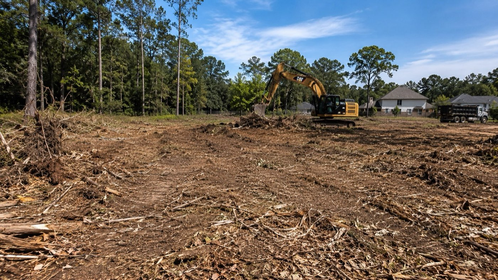

Blog · Guide · Published June 2026
Cost of Land Clearing in Texas 2026: Per-Acre Pricing Guide

Land clearing in Texas typically runs $1,500 to $6,500 per acre — but the spread is huge depending on what you're clearing, where you're clearing it, and what you want left on the ground when crews leave. Here's how the math actually works in Greater Houston and Montgomery County in 2026.
The five things that drive the per-acre price
Every land-clearing bid you'll get is a function of these five inputs. Get them right and the bids should be close. Get them wrong (or leave them unspecified) and you'll get three numbers that don't compare to each other at all.
- Density. Light brush and small trees mulch fast. Mature hardwoods, dense pines, or a thicket of yaupon and Chinese tallow take 3-5x as long per acre.
- Method. Forestry mulching grinds vegetation in place. Bulldozer + haul cuts everything and trucks it off. Burn (where allowed) is the cheapest but requires permits, a burn ban check, and a safe burn day. Each method changes the per-acre number by a lot.
- Stumps and root balls. Surface mulching leaves stumps. If you want full grubbing (root removal) for a building pad, that's a separate line item — commonly $300-$1,200 per acre on top of clearing.
- Access and topography. Flat acreage with a road frontage gate is cheap. A wet bottomland tract behind locked gates with no equipment access burns half a day on logistics every morning. Steep slopes and creek crossings add cost.
- Permits and erosion control. Any disturbance of 1 acre or more falls under TCEQ's stormwater rules (SWPPP, silt fence, stabilized construction entrance). Inside city limits or ETJ, tree-preservation rules can add survey, plan, or mitigation costs.
2026 Texas land-clearing price ranges by method
These are honest mid-2026 ranges for Greater Houston and Montgomery County. They assume normal access and don't include permitting, hauling beyond local landfill, or stabilization.
- Forestry mulching, light brush: $1,200–$2,500 per acre
- Forestry mulching, medium brush + small trees: $2,500–$4,500 per acre
- Forestry mulching, heavy brush + mature pines: $4,500–$6,500 per acre
- Dozer + push pile + burn (where allowed): $1,500–$3,500 per acre
- Dozer + push pile + haul off: $3,500–$8,000+ per acre (haul cost dominates)
- Selective clearing (mark and save specific trees): adds 20–40% to the above
- Stump grinding / grubbing for a building pad: $300–$1,200 per acre on top
- SWPPP + erosion control install: $1,500–$5,000 site total (not per acre)
Forestry mulching vs dozing — which is cheaper?
For light to medium brush, forestry mulching is usually cheaper than dozing because there's no haul, no burn, and no piles to manage. For heavy timber or large clear-cuts where you actually want the wood removed (or sold to a logger), dozing with haul-off can win.
The other thing to think about is what's left on the ground. Mulching leaves a 2-4 inch layer of chipped vegetation that holds the soil, controls erosion, and decomposes into the subgrade over a year or two. Dozing leaves bare dirt that erodes the first thunderstorm. If your next step is grading, that's fine. If your next step is anything else (cattle grazing, hunting, long-term hold), mulching wins on more than just price.
What about residential lots?
A 1/2 to 1-acre residential lot clearing in Magnolia, Tomball, or Conroe typically bids as a lump sum rather than per-acre. Common range: $3,000–$8,500 depending on density and access. Add stump removal if you're putting a house or pad on it. Most residential lots don't trigger TCEQ SWPPP requirements (under 1 acre disturbance) but the city's tree-preservation ordinance still might.
Hidden costs that show up after the bid
The bids that come back surprisingly low usually omit at least one of these. Ask up front:
- Stumps and root balls — mulched but not removed? Fine for cattle pasture. A problem for a building pad.
- Erosion control — silt fence and stabilized construction entrances are required on most 1+ acre jobs.
- Hauling — if you're dozing, where does the debris go? Local landfill tipping fees alone can run $40-$75 per ton.
- Hand-clearing around utilities and trees you want to save — equipment can't get close.
- SWPPP filing and maintenance — not a one-time cost; inspections and maintenance run through the build.
- Travel / mobilization — tight equipment, far site, locked access? Bake in a half-day of mobilization either side.
How to read a land-clearing bid
A real bid breaks the work out by zone or section, lists method per zone, and quotes per-acre rates with totals. A bid that's a single line item ("Clear 4 acres — $9,000") is impossible to compare against anything else and almost always hides something. Insist on line items.
Ready to scope your project?
Veritas Builders handles commercial site work across Magnolia, Conroe, Montgomery County, and Greater Houston. Line-item bids, coordinated trades, and one accountable team from raw ground to build-ready.